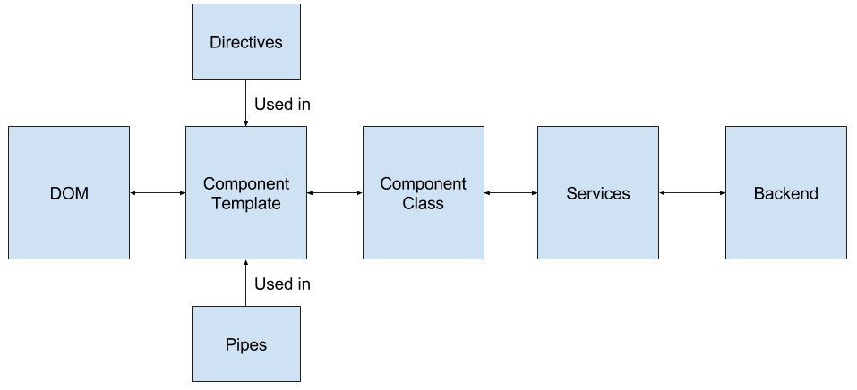

Diving into AngularJS 2
Anders Hessellund Jensen
What is AngularJS 2?
- A JavaScript framework for building web apps
- Batteries included (big)
- Made by Google
- Open source (Apache 2 license).
- Developed in TypeScript (but TypeScript is not required for
your own apps)
Application Architecture

Programming language?
- TypeScript
- JavaScript (ES5)
- ES6 classes + ES7 decorators
- Dart
To TypeScript or not to TypeScript?
"I think that JavaScript’s loose typing is one of its best
features and that type checking is way overrated.
TypeScript adds sweetness, but at a price. It is not a price I am
willing to pay."
- Douglas Crockford, author of JavaScript: The Good Parts
Relationship to Angular1
NG2 follows the same high-level architechture as NG1:
- Templating
- Two-way binding with automatic dirty checking
- Components
- Directives
- Pipes (same concept as filters in NG1)
- Dependency Injection
However, there are huge differences in the technical details:
- Templating is different
- RxJS observables instead of promises
- DI is much powerful
- Dirty-checking uses ZoneJS and is more customizable
The app
I am going to show you how to implement the TodoMVC app, a famous app
implemented in a lot of different programming languages and browsers.
- Sufficiently complex to demo basic features.
- Not sufficiently complex to demo
how different approaches scale.